1) Пчелен мед
Пчелният мед е основният и най-ценен продукт на пчеларството. Той се добива от нектара на различни растения, събран и преработен от пчелите по напълно естествен начин. Благодарение на богатото разнообразие от медоносна растителност, съществуват различни видове пчелен мед, всеки със своя характерен цвят, аромат и вкус.
Нашият мед се отличава с натурален произход, високо качество и запазени естествени свойства. Той е богат на естествени захари, ензими, витамини и минерали, които го правят ценна част от балансираното хранене.
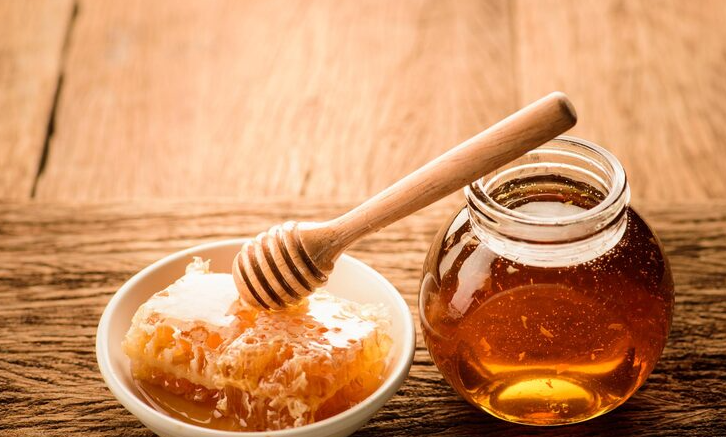
Източник: https://www.freepik.com/free-photos-vectors/sweet-honey
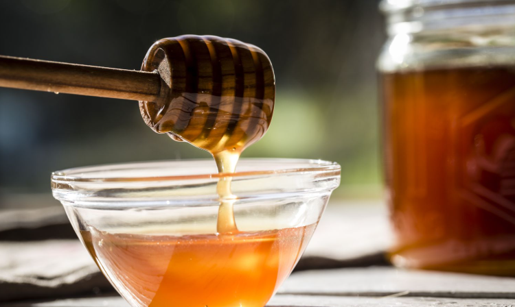
Източник: https://www.thespruceeats.com/honey-history-1807611
2) Пчелен прашец
Пчелният прашец е изцяло натурален продукт, събиран от цветовете на растенията и преработен от пчелите. Той е известен със своето богато съдържание на витамини, минерали, аминокиселини и ензими, които го правят ценна добавка към ежедневното хранене.
Нашият пчелен прашец се отличава с висока чистота и внимателна обработка, която запазва неговите естествени свойства. Подходящ е за хора, които търсят естествен източник на енергия и подкрепа за организма.
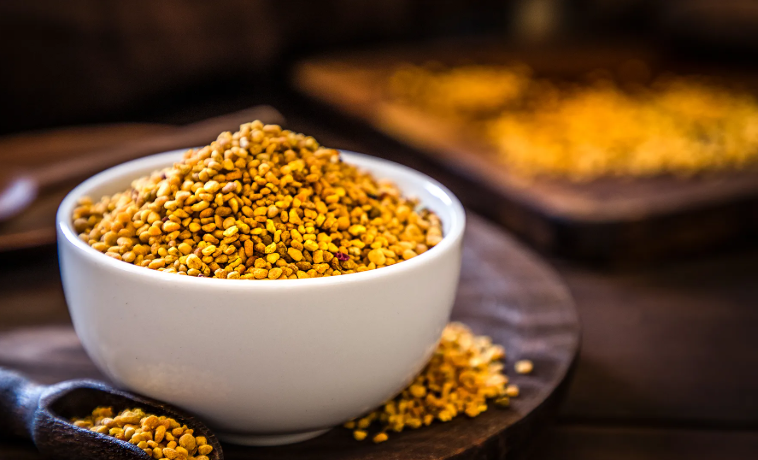
Източник: https://www.webmd.com/balance/bee-pollen-benefits-and-side-effects
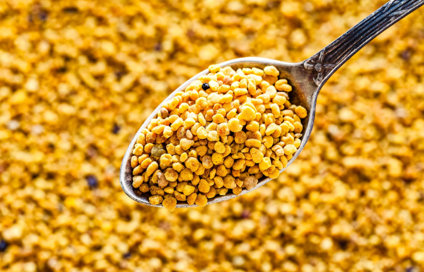
Източник: https://health.clevelandclinic.org/bee-pollen-benefits
3) Прополис
Прополисът, наричан още „пчелен клей“, е естествен продукт, който пчелите използват за защита и дезинфекция на кошера. Той е ценен със своите антибактериални и защитни свойства и намира широко приложение както в традиционната, така и в съвременната практика.
Предлаганият от нас прополис е с натурален произход и висока концентрация на активни вещества. Подходящ е за хора, които ценят силата на природните продукти и търсят естествена подкрепа за имунитета.
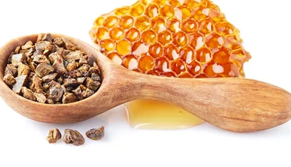
Източник: https://yeditepehastaneleri.com/en/health-guide/healthy-nutrition/what-propolis-how-use-propoli
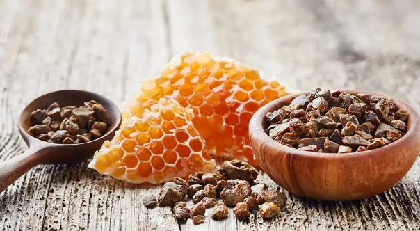
Източник: https://beegood.co.uk/blog/propolis-our-ingredient-super-hero/?srsltid=AfmBOopgxU4zi7GAVniBsN9eIf2cBq-AbOo34Qu9WpRr5Uvl_E3LIm4a
4) Восъчни свещи
Восъчните свещи, изработени от чист пчелен восък, създават уютна и естествена атмосфера. За разлика от парафиновите свещи, те горят по-чисто, излъчват лек естествен аромат и не отделят вредни вещества.
Нашите восъчни свещи са ръчно изработени, без добавки и изкуствени аромати, което ги прави подходящи както за ежедневна употреба, така и за специални поводи.
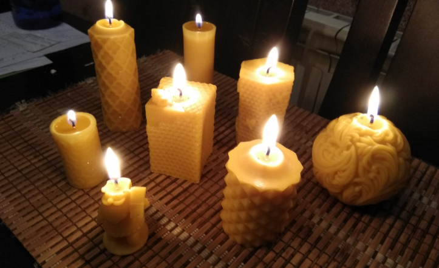
Източник: https://rayabee.farm/bg/products/sveschi-ot-pchelen-vosyk/
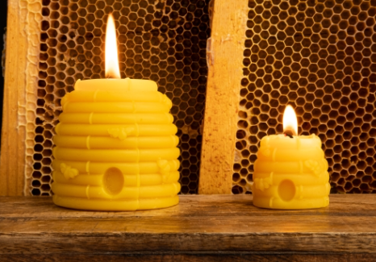
Източник: https://raya.bg/sveshi-ot-pchelen-vosak/ornamentni-svesshi/svessh-ot-pchelen-vosk-golyama-royache-pletena-trvna-s-pcheli.html
5) Пчелно млечице
Пчелното млечице е един от най-ценните и редки пчелни продукти. То служи за храна на пчелната майка и е известно със своето изключително богато съдържание на биологично активни вещества.
Нашето пчелно млечице е внимателно добито и съхранено при подходящи условия, за да се запазят максимално неговите качества. Подходящо е за хора, които търсят висококачествен и натурален продукт с концентрирано действие.
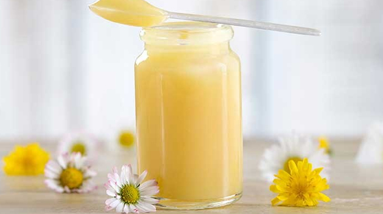
Източник: https://www.zdravnitza.com/a/nav/news/s/s/news_id/8260
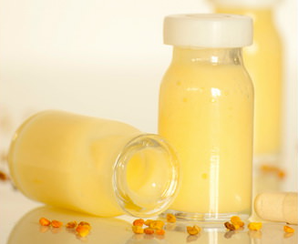
Източник: https://lekuva.net/196947/pchelno-mlechitse.html
6) Пчелна пита
Пчелната пита представлява натурален мед, съхранен в естествената си восъчна структура. Това е един от най-автентичните начини за консумация на мед, без допълнителна обработка.
Предлаганата от нас пчелна пита е добита директно от кошера и запазва напълно вкуса, аромата и качествата на меда и восъка в тяхната естествена форма.
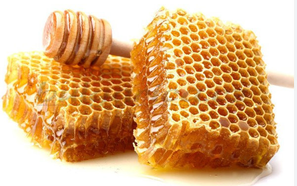
Източник: https://royalnuts.bg/
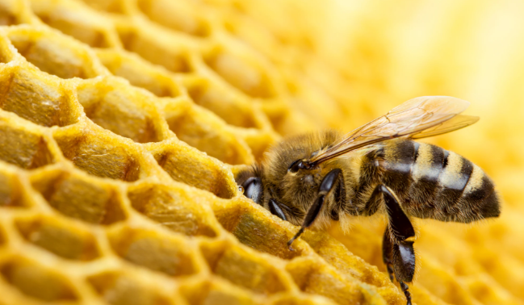
Източник: https://myprivacy.dpgmedia.nl/
7) Пчелен восък
Пчелният восък е натурален продукт, произвеждан от пчелите и използван за изграждане на питите в кошера. Той намира широко приложение в козметиката, медицината, занаятите и производството на свещи.
Нашият пчелен восък е с висока чистота и натурален произход, без примеси и химическа обработка, което го прави подходящ за разнообразни приложения.
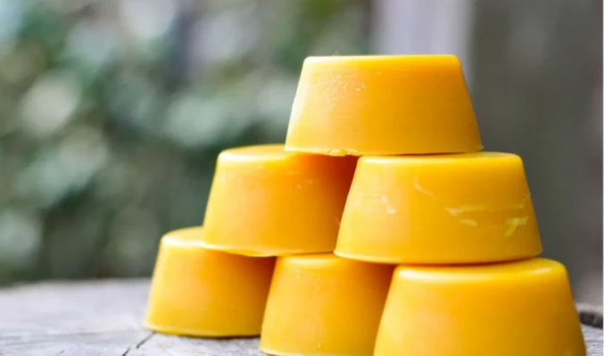
Източник: https://agri.bg/agrosaveti/pchelarstvo-3/pcelen-vosk-2
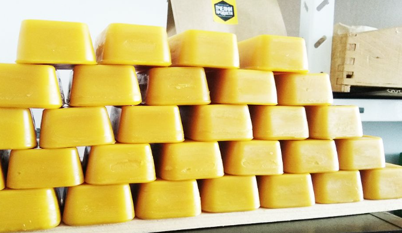
Източник: https://rayabee.farm/bg/products/pchelen-vosyk/
8) Мед с ядки
Медът с ядки съчетава натуралния пчелен мед с внимателно подбрани ядки, създавайки вкусен и хранителен продукт. Това е перфектна комбинация между естествена сладост и ценни хранителни вещества.
Нашият мед с ядки се приготвя без добавени подсладители и консерванти, като съчетава качество, вкус и естествен произход. Подходящ е както за директна консумация, така и като здравословно допълнение към различни храни.
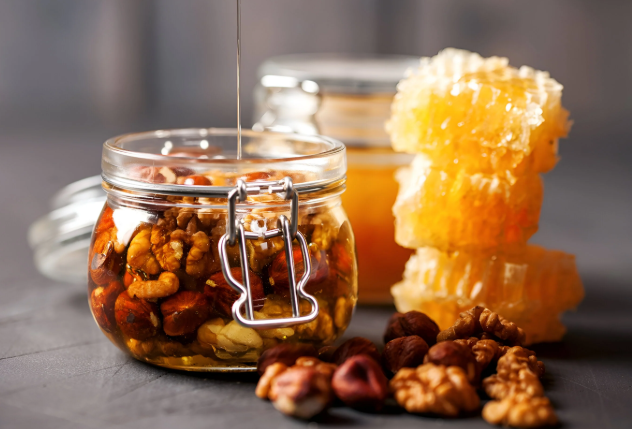
Източник: https://cavemanorganics.pk/
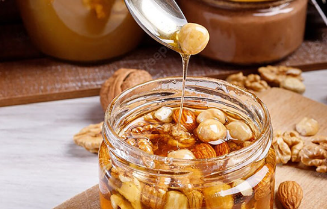
Източник: https://nutlyfoods.com/